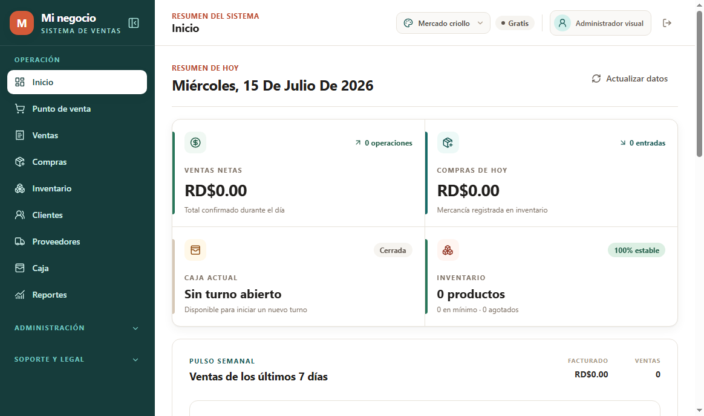
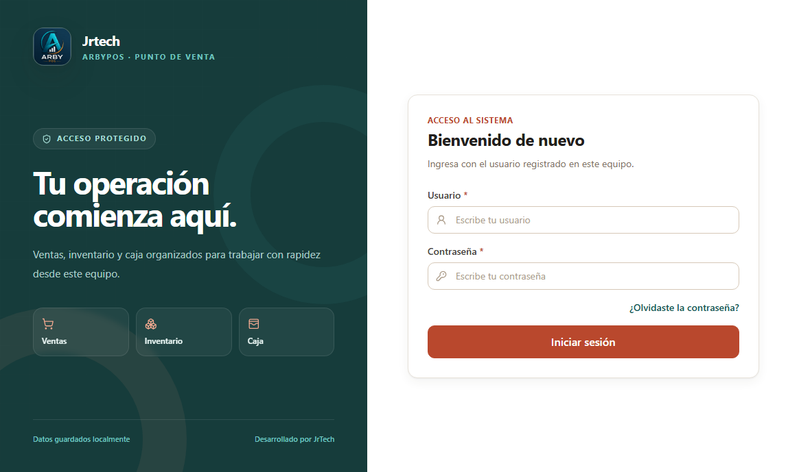

Ventas sin fricción
Busca por nombre o código de barras, arma el carrito y cobra con efectivo, tarjeta o pagos mixtos.
Ver experiencia ↗v1.3.2 · Localización instantánea por país
Un punto de venta claro y confiable para vender, administrar inventario, controlar caja e imprimir tickets desde Windows. Elige país, idioma y moneda; la interfaz cambia al instante.

Todo en un solo lugar
ArbyPos conecta las tareas esenciales de tu negocio en una experiencia simple, rápida y preparada para crecer.
Busca por nombre o código de barras, arma el carrito y cobra con efectivo, tarjeta o pagos mixtos.
Ver experiencia ↗Productos, costos, existencias mínimas, imágenes, compras y alertas de reposición.
Apertura, movimientos, gastos, cierre y diferencias con un resumen diario entendible.
Tickets de 58/80 mm, documentos A4, etiquetas y ESC/POS para impresoras compatibles.
Conecta cajas en la misma red y habilita un POS móvil temporal mediante QR.
Roles por función, auditoría, SQLite local y licencias firmadas para proteger la operación.
Selecciona uno de 20 países y cambia idioma, moneda, fechas y nombres de divisas al instante.
Diseñado para el mostrador
Desde la primera venta hasta el cierre de caja, cada pantalla está pensada para que el equipo encuentre lo importante sin perderse.

Empieza a tu ritmo
Comienza con lo esencial y activa funciones Premium cuando tu operación lo necesite. Los precios vigentes se confirman con JrTech.
Para comenzar
La base para vender y organizar un negocio en un equipo.
Para crecer
Funciones avanzadas sin compromiso permanente.
Para consolidar
Un único pago para trabajar con las funciones incluidas.
Así funciona
Descarga la versión oficial para Windows y crea el administrador inicial.
Agrega el negocio, productos, caja, métodos de pago e impresora.
Registra ventas, controla existencias y revisa el cierre del día.
Estamos para ayudarte
JrTech te acompaña con instalación, licencias, impresión, red local y configuración de ArbyPos.